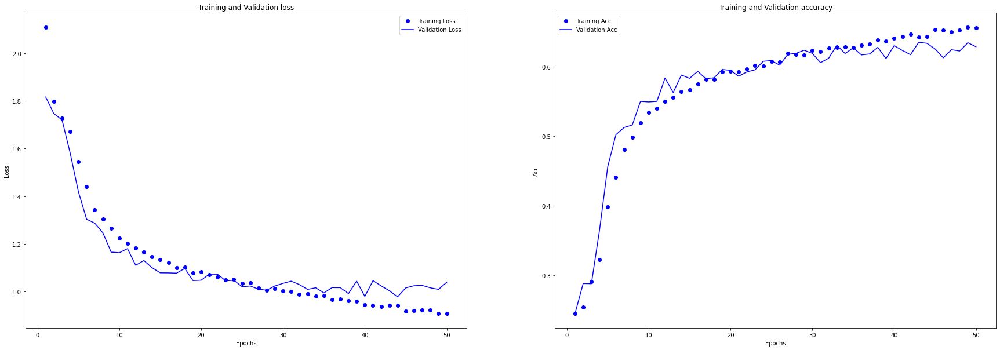
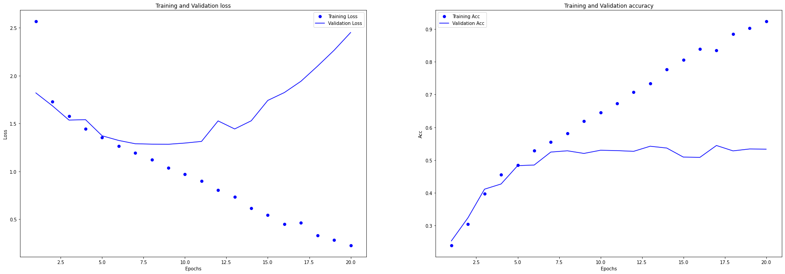
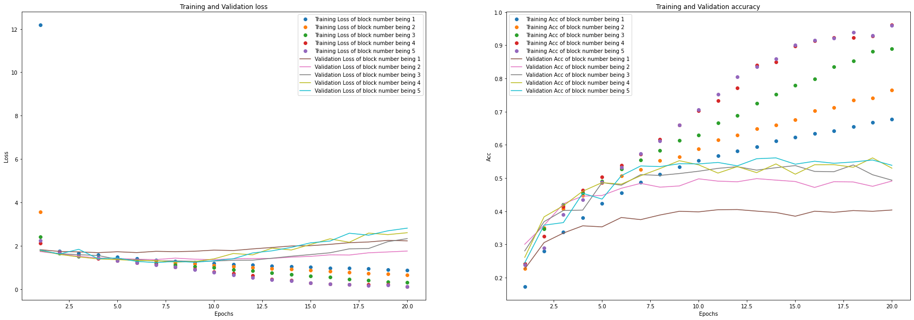
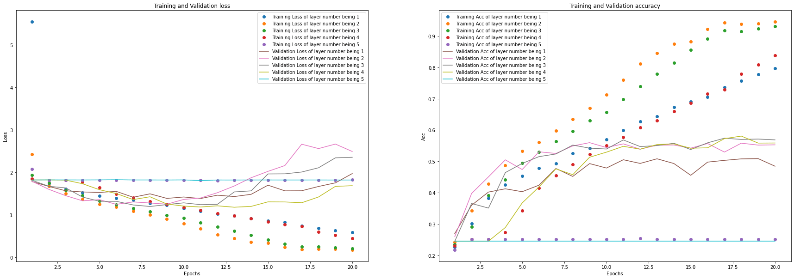
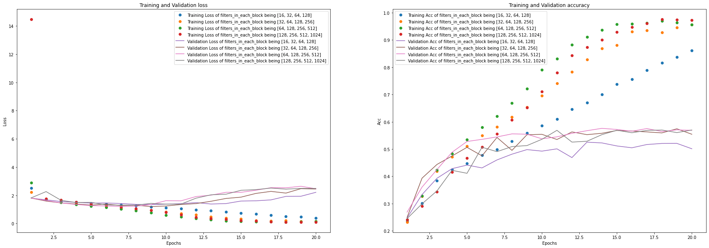
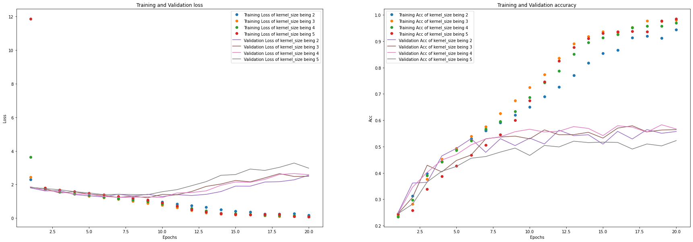
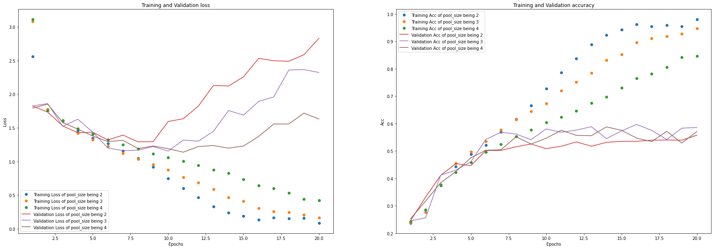
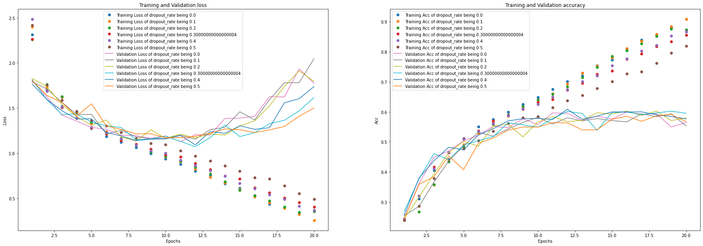
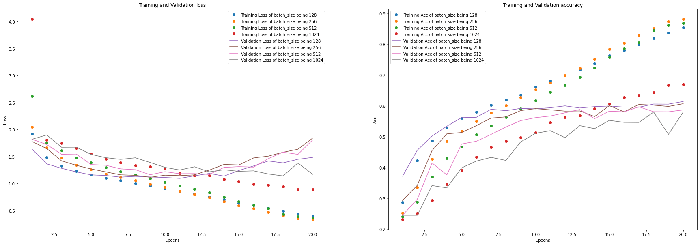
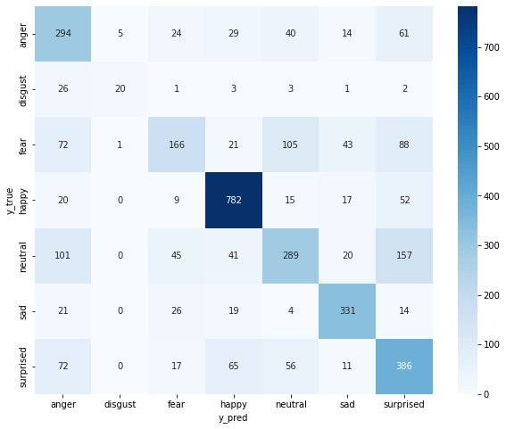

卷积神经网络 CNN 对 fer2013 数据集进行人脸表情识别¶
使用 Keras 构建卷积神经网络，对 Block 数量、卷积核大小、Dropout rate 进行参数调优，使用数据增强方法生成模型数据缓解过拟合问题。最优模型在测试集上的分类准确率、精确率和召回率均为 63%，比基准模型的分类效果提高了约 10%。

数据增强¶
当样本中的数据量不够多，又想尽量提升模型的训练效果时，可以使用数据增强技术。
对现有数据进行变形，如平移、旋转、拉伸等操作，生成新的训练数据。这些新的数据中仍有较为重要的特征（例如猫的特征），因此可以提高模型的准确率。
更多内容可参见 Keras 数据增强教程。
本项目就使用了数据增强技术，下面两张图片分别是原始图片和数据增强后的图片。
原始的图片：
数据增强后的图片：

迁移学习¶
使用预训练的网络，即用前人已经训练好的 Feature Map 层，对我们想要的数据进行特征提取。注意这里仅进行特征提取，并不进行预测。
以 VGG16 算法为例，具体代码如下：
from keras.applications import VGG16
conv_base = VGG16(weights="imagenet", include_top=False, input_shape=(150, 150, 3))
include_top=False代表仅使用 VGG16 中的 Feature Map 层，并不使用用于分类的全连接层。- 如果
include_top=True，则同时使用 VGG16 中的 Feature Map 层和分类的全连接层。VGG16 最终可以对 1000 种物体进行分类。
此外，使用 VGG16 中的 Feature Map 层又分两种情况：
- 如果只是希望使用 VGG16 中的网络结构，但网络中的具体参数需要我们自己训练，则需要设置
这对机器的性能要求很高，因为可能需要训练非常多的参数。但由于参数是基于我们自己的数据训练出来的，因此更适用于我们的数据，从而准确率应该比较高。
- 如果希望使用 VGG16 中的网络结构和 VGG16 网络中的具体参数，则需要设置
由于是直接借用 VGG16 中 Feature Map 层的网络结构和具体参数，真正需要求参数的就只有分类的全连接层，因此整个训练过程非常快。由于参数是 VGG16 网络已经算好的，而 VGG16 用的数据和我们的数据可能有较大差异，因此准确率不一定很高。
更复杂的迁移学习¶
上述的迁移学习是将 Feature Map 层用 VGG16 训练好的，再接上我们自己定义的分类的全连接层。
更复杂的迁移学习可以是：先用 VGG16 训练好 Feature Map 层，再接上我们自己定义的 Feature Map 层，最后再接上我们自己定义的分类的全连接层。
可见这里多了一个自己训练的 Feature Map 层，也许能对模型效果有提升。
数据准备¶
import functions
import importlib
importlib.reload(functions)
from functions import *
import os
import time
import numpy as np
import pandas as pd
from tqdm import tqdm
from sklearn.metrics import classification_report, confusion_matrix
使用 GPU¶
# os.environ["CUDA_VISIBLE_DEVICES"] = "-1" #仅 CPU
os.environ["CUDA_VISIBLE_DEVICES"] = "0" # GPU 0 每次只用一个 GPU
# os.environ["CUDA_VISIBLE_DEVICES"] = "1" #GPU 1
从数组文件中读取数据¶
x_train = np.load("x_train.npy")
y_train = np.load("y_train.npy")
x_val = np.load("x_val.npy")
y_val = np.load("y_val.npy")
x_test = np.load("x_test.npy")
y_test = np.load("y_test.npy")
根据数据集的内容，划分标签¶
搭建初始模型¶
搭建初始模型：三个 block（两层卷积，一层最大池化） + Flatten + 全连接层（Dense）
- 第一个 Block：2 个卷积层均为 filters=32, kernel_size=3；最大池化层：pool_size=2, strides=2
- 第二个 Block：2 个卷积层均为 filters=64, kernel_size=3；最大池化层：pool_size=2, strides=2
- 第三个 Block：2 个卷积层均为 filters=128, kernel_size=3；最大池化层：pool_size=2, strides=2
- Flatten 层用来将输入"压平"，即把多维的输入一维化，常用在从卷积层到全连接层的过渡。Flatten 不影响 batch 的大小。
- 全连接层：输出 7 个类别的概率，激活函数为 softmax
Keras.clear_session()
# 训练初始模型
# 记录训练模型的开始时间
start = time.time()
history = tuning(
block_num=3,
layer_num=2,
filters_in_each_block=[32, 64, 128],
kernel_size=3,
pool_size=2,
strides=2,
dropout_rate=0,
batch_size=512,
epochs=20,
x_train=x_train,
y_train=y_train,
x_val=x_val,
y_val=y_val,
)
# 记录训练模型的耗时
print("训练模型一共耗时{}秒".format((time.time() - start)))
# 绘制训练曲线
plot_loss_acc(history)

可以明显的看到，越往后训练，训练集的准确率越高，验证集的准确率和损失函数反而越来越差，这是非常典型的过拟合的情形，有什么改进措施呢？<BR>
考虑以下改进方法（及其组合）：
- 调整 Block 的数量；
- 改变每个 Block 中的神经网络层数；
- 改变每层的神经元数量及 Kernel size 的大小，改变最大池化层的 pool_size 和 strides；
- 增加 dropout；
- 调整 batch；
- 调整 epochs；
- 数据增强方法。
模型调优¶
调整 Block 的数量¶
设置 Block 的数量为 1 至 5，分别进行训练。
Keras.clear_session()
# 调整 Block 的数量
# 定义空列表，用于存储每个参数的模型结果
history_list = []
# 先指定每个 Block 的 filters 数量，再根据 Block 的数量选取相应的 filters 数量
filters_for_all_block = [32, 64, 128, 256, 512]
pbar = tqdm(range(1, 5 + 1), leave=True)
for block_num in pbar:
pbar.set_description("Block_num: {}".format(block_num))
history = tuning(
block_num=block_num,
layer_num=2,
filters_in_each_block=filters_for_all_block[:block_num],
kernel_size=3,
pool_size=2,
strides=2,
dropout_rate=0,
batch_size=512,
epochs=20,
x_train=x_train,
y_train=y_train,
x_val=x_val,
y_val=y_val,
show_epoch_log=0,
)
history_list.append(history)
# 绘制训练曲线
plot_loss_acc_of_multiple_paramters(history_list, "block number", list(range(1, 5 + 1)))

从结果中可以看出，将 Block 的数量设为4较合适。
调整每个 Block 中的神经网络层数¶
每个 Block 的层数设为 1 至 5，分别进行训练。
Keras.clear_session()
# 调整 Block 的数量
# 定义空列表，用于存储每个参数的模型结果
history_list = []
# 指定每个 Block 的 filters 数量
filters_for_all_block = [32, 64, 128, 256]
pbar = tqdm(range(1, 5 + 1), leave=True)
for layer_num in pbar:
pbar.set_description("Layer_num: {}".format(layer_num))
history = tuning(
block_num=4,
layer_num=layer_num,
filters_in_each_block=filters_for_all_block,
kernel_size=3,
pool_size=2,
strides=2,
dropout_rate=0,
batch_size=512,
epochs=20,
x_train=x_train,
y_train=y_train,
x_val=x_val,
y_val=y_val,
show_epoch_log=0,
)
history_list.append(history)
# 绘制训练曲线
plot_loss_acc_of_multiple_paramters(history_list, "layer number", list(range(1, 5 + 1)))

从结果中可以看出，将每个 Block 中的神经网络层数设为2较合适，即可以沿用原模型。
调整每层的神经元数量¶
设置每层的神经元数量为 16 至 1024 的四种组合，分别进行训练。
Keras.clear_session()
# 调整每个 Block 中的神经网络层数
# 定义空列表，用于存储每个参数的模型结果
history_list = []
# 指定每个 Block 的 filters 数量
filters_in_each_block_list = [
[16, 32, 64, 128],
[32, 64, 128, 256],
[64, 128, 256, 512],
[128, 256, 512, 1024],
]
pbar = tqdm(filters_in_each_block_list, leave=True)
for filters_in_each_block in pbar:
pbar.set_description("filters_in_each_block: {}".format(filters_in_each_block))
history = tuning(
block_num=4,
layer_num=2,
filters_in_each_block=filters_in_each_block,
kernel_size=3,
pool_size=2,
strides=2,
dropout_rate=0,
batch_size=512,
epochs=20,
x_train=x_train,
y_train=y_train,
x_val=x_val,
y_val=y_val,
show_epoch_log=0,
)
history_list.append(history)
# 绘制训练曲线
plot_loss_acc_of_multiple_paramters(
history_list, "filters_in_each_block", filters_in_each_block_list
)

从结果中可以看出，将每个 Block 中的神经网络层数设为[64, 128, 256, 512]较合适。
调整 Kernel size 的大小¶
设置 Kernel size 的大小为 2 至 5，分别进行训练。
Keras.clear_session()
# 调整 kernel_size
# 定义空列表，用于存储每个参数的模型结果
history_list = []
# 指定 Kernel Size
kernel_size_list = list(range(2, 5 + 1))
pbar = tqdm(kernel_size_list, leave=True)
for kernel_size in pbar:
pbar.set_description("kernel_size: {}".format(kernel_size))
history = tuning(
block_num=4,
layer_num=2,
filters_in_each_block=[64, 128, 256, 512],
kernel_size=kernel_size,
pool_size=2,
strides=2,
dropout_rate=0,
batch_size=512,
epochs=20,
x_train=x_train,
y_train=y_train,
x_val=x_val,
y_val=y_val,
show_epoch_log=0,
)
history_list.append(history)
# 绘制训练曲线
plot_loss_acc_of_multiple_paramters(history_list, "kernel_size", kernel_size_list)

从结果中可以看出，将 Kernel size 的大小设为3较合适。
调整最大池化层的 pool_size¶
设置最大池化层的 pool_size 为 2 至 4，分别进行训练。
Keras.clear_session()
# 调整 pool_size
# 定义空列表，用于存储每个参数的模型结果
history_list = []
# 指定 Pool Size
pool_size_list = list(range(2, 4 + 1))
pbar = tqdm(pool_size_list, leave=True)
for pool_size in pbar:
pbar.set_description("pool_size: {}".format(pool_size))
history = tuning(
block_num=4,
layer_num=2,
filters_in_each_block=[64, 128, 256, 512],
kernel_size=3,
pool_size=pool_size,
strides=2,
dropout_rate=0,
batch_size=512,
epochs=20,
x_train=x_train,
y_train=y_train,
x_val=x_val,
y_val=y_val,
show_epoch_log=0,
)
history_list.append(history)
# 绘制训练曲线
plot_loss_acc_of_multiple_paramters(history_list, "pool_size", pool_size_list)

从结果中可以看出，将最大池化层的 pool_size 设为4较合适。
调整 dropout_rate¶
设置 dropout_rate 的大小为 0 至 0.5，间隔 0.1，分别进行训练。
Keras.clear_session()
# 调整 dropout_rate
# 定义空列表，用于存储每个参数的模型结果
history_list = []
# 指定 dropout_rate
dropout_rate_list = list(np.arange(0, 0.5 + 0.1, 0.1))
pbar = tqdm(dropout_rate_list, leave=True)
for dropout_rate in pbar:
pbar.set_description("dropout_rate: {}".format(dropout_rate))
history = tuning(
block_num=4,
layer_num=2,
filters_in_each_block=[64, 128, 256, 512],
kernel_size=3,
pool_size=4,
strides=2,
dropout_rate=dropout_rate,
batch_size=512,
epochs=20,
x_train=x_train,
y_train=y_train,
x_val=x_val,
y_val=y_val,
show_epoch_log=0,
)
history_list.append(history)
# 绘制训练曲线
plot_loss_acc_of_multiple_paramters(history_list, "dropout_rate", dropout_rate_list)

从结果中可以看出，将 dropout_rate 设为0.2较合适。
调整 batch_size¶
设置 batch_size 的大小为、[128, 256, 512, 1024]，分别进行训练。
Keras.clear_session()
# 调整 batch_size
# 定义空列表，用于存储每个参数的模型结果
history_list = []
# 指定 batch_size
batch_size_list = [128, 256, 512, 1024]
pbar = tqdm(batch_size_list, leave=True)
for batch_size in pbar:
pbar.set_description("batch_size: {}".format(batch_size))
history = tuning(
block_num=4,
layer_num=2,
filters_in_each_block=[64, 128, 256, 512],
kernel_size=3,
pool_size=4,
strides=2,
dropout_rate=0.2,
batch_size=batch_size,
epochs=20,
x_train=x_train,
y_train=y_train,
x_val=x_val,
y_val=y_val,
show_epoch_log=0,
)
history_list.append(history)
# 绘制训练曲线
plot_loss_acc_of_multiple_paramters(history_list, "batch_size", batch_size_list)

从结果中可以看出，将 batch_size 设为256较合适。
数据增强¶
经过上述调优，模型的准确率已经接近 60%，但是仍然有过拟合的情况，因此可以考虑使用数据增强的方法来改善模型的准确率。
数据增强前的原始图片¶
数据增强后的生成图片¶
# 定义"图像数据增强产生器 (ImageDataGenerator)"的参数
datagen = ImageDataGenerator(
rotation_range=20, # 随机旋转的角度
zoom_range=0.1, # 随机缩放的范围
width_shift_range=0.1, # 随机水平平移的范围
height_shift_range=0.1, # 随机竖直平移的范围
shear_range=0.1, # 设置随机错切变换的角度
horizontal_flip=True, # 随机将一半图像水平翻转
fill_mode="nearest",
) # 填充新创建像素的方法
# 透过训练数据集来训练 (fit) 图像数据增强产生器 (ImageDataGenerator) 的实例
datagen.fit(x_train)
plot_augmented_image(x_train[[182, 3139, 3981]], y_train[[182, 3139, 3981]], datagen)
# 定义图片生成器
datagen = ImageDataGenerator(
rotation_range=20, # 随机旋转的角度
zoom_range=0.1, # 随机缩放的范围
width_shift_range=0.1, # 随机水平平移的范围
height_shift_range=0.1, # 随机竖直平移的范围
shear_range=0.1, # 设置随机错切变换的角度
horizontal_flip=True, # 随机将一半图像水平翻转
fill_mode="nearest",
) # 填充新创建像素的方法
datagen.fit(x_train)
Keras.clear_session()
# 搭建模型
model = build_model(
block_num=4,
layer_num=2,
filters_in_each_block=[64, 128, 256, 512],
kernel_size=3,
pool_size=4,
strides=2,
dropout_rate=0.2,
x_train=x_train,
)
# 编译模型
model.compile(optimizer="adam", loss="categorical_crossentropy", metrics=["accuracy"])
# 训练模型
history = model.fit(
datagen.flow(x_train, y_train, batch_size=256),
epochs=50,
validation_data=(x_val, y_val),
verbose=2,
)
# 绘制训练曲线
plot_loss_acc(history)
训练过程
Epoch 1/50
113/113 - 7s - loss: 2.1093 - accuracy: 0.2449 - val_loss: 1.8164 - val_accuracy: 0.2449 - 7s/epoch - 66ms/step
Epoch 2/50
113/113 - 7s - loss: 1.7981 - accuracy: 0.2544 - val_loss: 1.7467 - val_accuracy: 0.2881 - 7s/epoch - 61ms/step
Epoch 3/50
113/113 - 7s - loss: 1.7262 - accuracy: 0.2909 - val_loss: 1.7203 - val_accuracy: 0.2878 - 7s/epoch - 62ms/step
Epoch 4/50
113/113 - 7s - loss: 1.6725 - accuracy: 0.3225 - val_loss: 1.5804 - val_accuracy: 0.3653 - 7s/epoch - 62ms/step
Epoch 5/50
113/113 - 7s - loss: 1.5439 - accuracy: 0.3981 - val_loss: 1.4188 - val_accuracy: 0.4564 - 7s/epoch - 62ms/step
Epoch 6/50
113/113 - 7s - loss: 1.4416 - accuracy: 0.4414 - val_loss: 1.3039 - val_accuracy: 0.5024 - 7s/epoch - 62ms/step
Epoch 7/50
113/113 - 7s - loss: 1.3441 - accuracy: 0.4814 - val_loss: 1.2869 - val_accuracy: 0.5127 - 7s/epoch - 62ms/step
Epoch 8/50
113/113 - 7s - loss: 1.3043 - accuracy: 0.4988 - val_loss: 1.2460 - val_accuracy: 0.5163 - 7s/epoch - 62ms/step
Epoch 9/50
113/113 - 7s - loss: 1.2659 - accuracy: 0.5192 - val_loss: 1.1656 - val_accuracy: 0.5503 - 7s/epoch - 62ms/step
Epoch 10/50
113/113 - 7s - loss: 1.2247 - accuracy: 0.5345 - val_loss: 1.1632 - val_accuracy: 0.5495 - 7s/epoch - 62ms/step
Epoch 11/50
113/113 - 7s - loss: 1.2025 - accuracy: 0.5404 - val_loss: 1.1801 - val_accuracy: 0.5503 - 7s/epoch - 62ms/step
Epoch 12/50
113/113 - 7s - loss: 1.1825 - accuracy: 0.5499 - val_loss: 1.1105 - val_accuracy: 0.5837 - 7s/epoch - 61ms/step
Epoch 13/50
113/113 - 7s - loss: 1.1661 - accuracy: 0.5557 - val_loss: 1.1303 - val_accuracy: 0.5631 - 7s/epoch - 62ms/step
Epoch 14/50
113/113 - 7s - loss: 1.1469 - accuracy: 0.5642 - val_loss: 1.1002 - val_accuracy: 0.5882 - 7s/epoch - 62ms/step
Epoch 15/50
113/113 - 7s - loss: 1.1348 - accuracy: 0.5670 - val_loss: 1.0787 - val_accuracy: 0.5834 - 7s/epoch - 62ms/step
Epoch 16/50
113/113 - 7s - loss: 1.1208 - accuracy: 0.5752 - val_loss: 1.0784 - val_accuracy: 0.5935 - 7s/epoch - 62ms/step
Epoch 17/50
113/113 - 7s - loss: 1.1006 - accuracy: 0.5817 - val_loss: 1.0774 - val_accuracy: 0.5829 - 7s/epoch - 62ms/step
Epoch 18/50
113/113 - 7s - loss: 1.1032 - accuracy: 0.5817 - val_loss: 1.0972 - val_accuracy: 0.5843 - 7s/epoch - 61ms/step
Epoch 19/50
113/113 - 7s - loss: 1.0778 - accuracy: 0.5929 - val_loss: 1.0462 - val_accuracy: 0.5963 - 7s/epoch - 61ms/step
Epoch 20/50
113/113 - 7s - loss: 1.0835 - accuracy: 0.5934 - val_loss: 1.0477 - val_accuracy: 0.5949 - 7s/epoch - 62ms/step
Epoch 21/50
113/113 - 7s - loss: 1.0720 - accuracy: 0.5926 - val_loss: 1.0736 - val_accuracy: 0.5865 - 7s/epoch - 61ms/step
Epoch 22/50
113/113 - 7s - loss: 1.0614 - accuracy: 0.5966 - val_loss: 1.0729 - val_accuracy: 0.5926 - 7s/epoch - 62ms/step
Epoch 23/50
113/113 - 7s - loss: 1.0502 - accuracy: 0.6021 - val_loss: 1.0453 - val_accuracy: 0.5957 - 7s/epoch - 61ms/step
Epoch 24/50
113/113 - 7s - loss: 1.0512 - accuracy: 0.6014 - val_loss: 1.0475 - val_accuracy: 0.6080 - 7s/epoch - 61ms/step
Epoch 25/50
113/113 - 7s - loss: 1.0357 - accuracy: 0.6082 - val_loss: 1.0204 - val_accuracy: 0.6091 - 7s/epoch - 62ms/step
Epoch 26/50
113/113 - 7s - loss: 1.0362 - accuracy: 0.6067 - val_loss: 1.0235 - val_accuracy: 0.6024 - 7s/epoch - 62ms/step
Epoch 27/50
113/113 - 7s - loss: 1.0139 - accuracy: 0.6191 - val_loss: 1.0101 - val_accuracy: 0.6180 - 7s/epoch - 62ms/step
Epoch 28/50
113/113 - 7s - loss: 1.0049 - accuracy: 0.6181 - val_loss: 1.0057 - val_accuracy: 0.6194 - 7s/epoch - 61ms/step
Epoch 29/50
113/113 - 7s - loss: 1.0128 - accuracy: 0.6171 - val_loss: 1.0234 - val_accuracy: 0.6239 - 7s/epoch - 61ms/step
Epoch 30/50
113/113 - 7s - loss: 1.0037 - accuracy: 0.6239 - val_loss: 1.0346 - val_accuracy: 0.6194 - 7s/epoch - 62ms/step
Epoch 31/50
113/113 - 7s - loss: 1.0002 - accuracy: 0.6223 - val_loss: 1.0438 - val_accuracy: 0.6060 - 7s/epoch - 62ms/step
Epoch 32/50
113/113 - 7s - loss: 0.9880 - accuracy: 0.6267 - val_loss: 1.0294 - val_accuracy: 0.6124 - 7s/epoch - 62ms/step
Epoch 33/50
113/113 - 7s - loss: 0.9901 - accuracy: 0.6277 - val_loss: 1.0093 - val_accuracy: 0.6311 - 7s/epoch - 62ms/step
Epoch 34/50
113/113 - 7s - loss: 0.9820 - accuracy: 0.6288 - val_loss: 1.0159 - val_accuracy: 0.6191 - 7s/epoch - 62ms/step
Epoch 35/50
113/113 - 7s - loss: 0.9836 - accuracy: 0.6274 - val_loss: 0.9944 - val_accuracy: 0.6275 - 7s/epoch - 62ms/step
Epoch 36/50
113/113 - 7s - loss: 0.9663 - accuracy: 0.6312 - val_loss: 1.0168 - val_accuracy: 0.6172 - 7s/epoch - 61ms/step
Epoch 37/50
113/113 - 7s - loss: 0.9691 - accuracy: 0.6330 - val_loss: 1.0165 - val_accuracy: 0.6186 - 7s/epoch - 62ms/step
Epoch 38/50
113/113 - 7s - loss: 0.9606 - accuracy: 0.6388 - val_loss: 0.9916 - val_accuracy: 0.6280 - 7s/epoch - 61ms/step
Epoch 39/50
113/113 - 7s - loss: 0.9580 - accuracy: 0.6367 - val_loss: 1.0440 - val_accuracy: 0.6119 - 7s/epoch - 62ms/step
Epoch 40/50
113/113 - 7s - loss: 0.9455 - accuracy: 0.6414 - val_loss: 0.9797 - val_accuracy: 0.6305 - 7s/epoch - 61ms/step
Epoch 41/50
113/113 - 7s - loss: 0.9422 - accuracy: 0.6437 - val_loss: 1.0461 - val_accuracy: 0.6236 - 7s/epoch - 62ms/step
Epoch 42/50
113/113 - 7s - loss: 0.9372 - accuracy: 0.6467 - val_loss: 1.0237 - val_accuracy: 0.6174 - 7s/epoch - 62ms/step
Epoch 43/50
113/113 - 7s - loss: 0.9420 - accuracy: 0.6428 - val_loss: 1.0036 - val_accuracy: 0.6353 - 7s/epoch - 61ms/step
Epoch 44/50
113/113 - 7s - loss: 0.9424 - accuracy: 0.6437 - val_loss: 0.9779 - val_accuracy: 0.6339 - 7s/epoch - 61ms/step
Epoch 45/50
113/113 - 7s - loss: 0.9166 - accuracy: 0.6533 - val_loss: 1.0155 - val_accuracy: 0.6258 - 7s/epoch - 61ms/step
Epoch 46/50
113/113 - 7s - loss: 0.9200 - accuracy: 0.6527 - val_loss: 1.0246 - val_accuracy: 0.6130 - 7s/epoch - 62ms/step
Epoch 47/50
113/113 - 7s - loss: 0.9235 - accuracy: 0.6506 - val_loss: 1.0260 - val_accuracy: 0.6247 - 7s/epoch - 61ms/step
Epoch 48/50
113/113 - 7s - loss: 0.9225 - accuracy: 0.6530 - val_loss: 1.0159 - val_accuracy: 0.6227 - 7s/epoch - 62ms/step
Epoch 49/50
113/113 - 7s - loss: 0.9082 - accuracy: 0.6571 - val_loss: 1.0092 - val_accuracy: 0.6347 - 7s/epoch - 62ms/step
Epoch 50/50
113/113 - 7s - loss: 0.9078 - accuracy: 0.6558 - val_loss: 1.0390 - val_accuracy: 0.6289 - 7s/epoch - 61ms/step
从图中可以看到，使用数据增强方法可以显著缓解过拟合问题，训练集和验证集的准确率差异并不明显，且最终模型在验证集上的准确率达到了 63% 左右。
选择最优的 epoch¶
best_epoch = np.argmax(history.history["val_accuracy"]) + 1
print("Best Epoch: %d" % (best_epoch))
print(
"Best Validation Accuracy: {:.2%}".format(np.max(history.history["val_accuracy"]))
)
最优的 epoch 为43，此时模型在验证集上的准确率为63.53%。
用训练好的最优模型在一个样本上做预测¶
Keras.clear_session()
# 搭建模型
model = build_model(
block_num=4,
layer_num=2,
filters_in_each_block=[64, 128, 256, 512],
kernel_size=3,
pool_size=4,
strides=2,
dropout_rate=0.2,
x_train=x_train,
)
# 编译模型
model.compile(optimizer="adam", loss="categorical_crossentropy", metrics=["accuracy"])
# 训练模型
history = model.fit(
datagen.flow(x_train, y_train, batch_size=256),
epochs=43,
validation_data=(x_val, y_val),
verbose=2,
)
训练过程
Epoch 1/43
113/113 - 7s - loss: 2.0246 - accuracy: 0.2452 - val_loss: 1.8065 - val_accuracy: 0.2625 - 7s/epoch - 66ms/step
Epoch 2/43
113/113 - 7s - loss: 1.7402 - accuracy: 0.2855 - val_loss: 1.6153 - val_accuracy: 0.3514 - 7s/epoch - 61ms/step
Epoch 3/43
113/113 - 7s - loss: 1.6020 - accuracy: 0.3613 - val_loss: 1.4921 - val_accuracy: 0.4185 - 7s/epoch - 62ms/step
Epoch 4/43
113/113 - 7s - loss: 1.4516 - accuracy: 0.4412 - val_loss: 1.3237 - val_accuracy: 0.5004 - 7s/epoch - 62ms/step
Epoch 5/43
113/113 - 7s - loss: 1.3549 - accuracy: 0.4811 - val_loss: 1.2504 - val_accuracy: 0.5322 - 7s/epoch - 62ms/step
Epoch 6/43
113/113 - 7s - loss: 1.2933 - accuracy: 0.5104 - val_loss: 1.2412 - val_accuracy: 0.5191 - 7s/epoch - 61ms/step
Epoch 7/43
113/113 - 7s - loss: 1.2545 - accuracy: 0.5218 - val_loss: 1.1973 - val_accuracy: 0.5428 - 7s/epoch - 61ms/step
Epoch 8/43
113/113 - 7s - loss: 1.2273 - accuracy: 0.5347 - val_loss: 1.1605 - val_accuracy: 0.5564 - 7s/epoch - 62ms/step
Epoch 9/43
113/113 - 7s - loss: 1.2018 - accuracy: 0.5449 - val_loss: 1.1386 - val_accuracy: 0.5670 - 7s/epoch - 62ms/step
Epoch 10/43
113/113 - 7s - loss: 1.1844 - accuracy: 0.5484 - val_loss: 1.1057 - val_accuracy: 0.5734 - 7s/epoch - 61ms/step
Epoch 11/43
113/113 - 7s - loss: 1.1562 - accuracy: 0.5653 - val_loss: 1.0958 - val_accuracy: 0.5885 - 7s/epoch - 62ms/step
Epoch 12/43
113/113 - 7s - loss: 1.1338 - accuracy: 0.5711 - val_loss: 1.1016 - val_accuracy: 0.5754 - 7s/epoch - 62ms/step
Epoch 13/43
113/113 - 7s - loss: 1.1171 - accuracy: 0.5761 - val_loss: 1.1246 - val_accuracy: 0.5634 - 7s/epoch - 62ms/step
Epoch 14/43
113/113 - 7s - loss: 1.1203 - accuracy: 0.5788 - val_loss: 1.0861 - val_accuracy: 0.5812 - 7s/epoch - 62ms/step
Epoch 15/43
113/113 - 7s - loss: 1.1037 - accuracy: 0.5820 - val_loss: 1.0349 - val_accuracy: 0.6133 - 7s/epoch - 62ms/step
Epoch 16/43
113/113 - 7s - loss: 1.0831 - accuracy: 0.5915 - val_loss: 1.0556 - val_accuracy: 0.5957 - 7s/epoch - 62ms/step
Epoch 17/43
113/113 - 7s - loss: 1.0679 - accuracy: 0.5968 - val_loss: 1.0906 - val_accuracy: 0.5879 - 7s/epoch - 62ms/step
Epoch 18/43
113/113 - 7s - loss: 1.0684 - accuracy: 0.5969 - val_loss: 1.0594 - val_accuracy: 0.6049 - 7s/epoch - 62ms/step
Epoch 19/43
113/113 - 7s - loss: 1.0482 - accuracy: 0.6033 - val_loss: 1.0593 - val_accuracy: 0.5979 - 7s/epoch - 62ms/step
Epoch 20/43
113/113 - 7s - loss: 1.0360 - accuracy: 0.6067 - val_loss: 1.1180 - val_accuracy: 0.5765 - 7s/epoch - 62ms/step
Epoch 21/43
113/113 - 7s - loss: 1.0367 - accuracy: 0.6085 - val_loss: 1.0429 - val_accuracy: 0.6066 - 7s/epoch - 62ms/step
Epoch 22/43
113/113 - 7s - loss: 1.0316 - accuracy: 0.6137 - val_loss: 1.0131 - val_accuracy: 0.6286 - 7s/epoch - 62ms/step
Epoch 23/43
113/113 - 7s - loss: 1.0232 - accuracy: 0.6109 - val_loss: 1.0350 - val_accuracy: 0.6108 - 7s/epoch - 63ms/step
Epoch 24/43
113/113 - 7s - loss: 1.0138 - accuracy: 0.6190 - val_loss: 1.0407 - val_accuracy: 0.6169 - 7s/epoch - 61ms/step
Epoch 25/43
113/113 - 7s - loss: 0.9990 - accuracy: 0.6225 - val_loss: 1.0447 - val_accuracy: 0.6138 - 7s/epoch - 62ms/step
Epoch 26/43
113/113 - 7s - loss: 0.9967 - accuracy: 0.6255 - val_loss: 1.0246 - val_accuracy: 0.6205 - 7s/epoch - 61ms/step
Epoch 27/43
113/113 - 7s - loss: 0.9966 - accuracy: 0.6228 - val_loss: 1.0368 - val_accuracy: 0.6088 - 7s/epoch - 61ms/step
Epoch 28/43
113/113 - 7s - loss: 0.9858 - accuracy: 0.6254 - val_loss: 1.0190 - val_accuracy: 0.6177 - 7s/epoch - 61ms/step
Epoch 29/43
113/113 - 7s - loss: 0.9889 - accuracy: 0.6257 - val_loss: 1.0030 - val_accuracy: 0.6199 - 7s/epoch - 62ms/step
Epoch 30/43
113/113 - 7s - loss: 0.9747 - accuracy: 0.6342 - val_loss: 1.0409 - val_accuracy: 0.6141 - 7s/epoch - 61ms/step
Epoch 31/43
113/113 - 7s - loss: 0.9741 - accuracy: 0.6289 - val_loss: 1.0068 - val_accuracy: 0.6247 - 7s/epoch - 62ms/step
Epoch 32/43
113/113 - 7s - loss: 0.9611 - accuracy: 0.6360 - val_loss: 1.0076 - val_accuracy: 0.6219 - 7s/epoch - 61ms/step
Epoch 33/43
113/113 - 7s - loss: 0.9607 - accuracy: 0.6366 - val_loss: 0.9972 - val_accuracy: 0.6314 - 7s/epoch - 61ms/step
Epoch 34/43
113/113 - 7s - loss: 0.9595 - accuracy: 0.6380 - val_loss: 0.9825 - val_accuracy: 0.6400 - 7s/epoch - 61ms/step
Epoch 35/43
113/113 - 7s - loss: 0.9483 - accuracy: 0.6430 - val_loss: 1.0099 - val_accuracy: 0.6225 - 7s/epoch - 61ms/step
Epoch 36/43
113/113 - 7s - loss: 0.9476 - accuracy: 0.6435 - val_loss: 1.0002 - val_accuracy: 0.6278 - 7s/epoch - 61ms/step
Epoch 37/43
113/113 - 7s - loss: 0.9440 - accuracy: 0.6456 - val_loss: 0.9977 - val_accuracy: 0.6333 - 7s/epoch - 61ms/step
Epoch 38/43
113/113 - 7s - loss: 0.9406 - accuracy: 0.6467 - val_loss: 0.9986 - val_accuracy: 0.6294 - 7s/epoch - 61ms/step
Epoch 39/43
113/113 - 7s - loss: 0.9288 - accuracy: 0.6475 - val_loss: 0.9911 - val_accuracy: 0.6278 - 7s/epoch - 61ms/step
Epoch 40/43
113/113 - 7s - loss: 0.9240 - accuracy: 0.6524 - val_loss: 0.9996 - val_accuracy: 0.6308 - 7s/epoch - 61ms/step
Epoch 41/43
113/113 - 7s - loss: 0.9213 - accuracy: 0.6539 - val_loss: 1.0105 - val_accuracy: 0.6230 - 7s/epoch - 61ms/step
Epoch 42/43
113/113 - 7s - loss: 0.9250 - accuracy: 0.6535 - val_loss: 1.0178 - val_accuracy: 0.6375 - 7s/epoch - 61ms/step
Epoch 43/43
113/113 - 7s - loss: 0.9127 - accuracy: 0.6566 - val_loss: 1.0083 - val_accuracy: 0.6375 - 7s/epoch - 61ms/step
# 指定需要预测的样本
i = 1111
import numpy as np
import matplotlib.pyplot as plt
plt.subplot(221)
plt.gray()
plt.imshow(x_train[i].reshape([48, 48]))
# 将图片转换为 4 维张量
x = np.array(x_train[i])
x = x.reshape(-1, 48, 48, 1)
# 输出特征图大小
print(x.shape)
# 预测各情绪的概率
emotion_prob = model.predict(x)
# 输出最佳的预测情绪
print(emotions_Str[np.argmax(emotion_prob)])
用训练好的最优模型在测试样本集合上做预测，并汇报预测的准确度¶
test_score = model.evaluate(x_test, y_test)
# 打印测试集上的损失和准确率
print("Test loss: {:.2f}".format(test_score[0]))
print("Test accuracy: {:.2%}".format(test_score[1]))
测试过程
113/113 [==============================] - 0s 2ms/step - loss: 1.0315 - accuracy: 0.6319
Test loss: 1.03
Test accuracy: 63.19%
绘制混淆矩阵¶
y_true = np.argmax(y_test, axis=1)
y_pred = np.argmax(model.predict(x_test), axis=1)
cm = confusion_matrix(y_true, y_pred)
df_cm = pd.DataFrame(cm, index=emotions_Str, columns=emotions_Str)
display(df_cm)
| anger | disgust | fear | happy | neutral | sad | surprised | |
|---|---|---|---|---|---|---|---|
| anger | 294 | 5 | 24 | 29 | 40 | 14 | 61 |
| disgust | 26 | 20 | 1 | 3 | 3 | 1 | 2 |
| fear | 72 | 1 | 166 | 21 | 105 | 43 | 88 |
| happy | 20 | 0 | 9 | 782 | 15 | 17 | 52 |
| neutral | 101 | 0 | 45 | 41 | 289 | 20 | 157 |
| sad | 21 | 0 | 26 | 19 | 4 | 331 | 14 |
| surprised | 72 | 0 | 17 | 65 | 56 | 11 | 386 |
import seaborn as sn
plt.figure(figsize=(10, 8))
sn.heatmap(df_cm, annot=True, cmap="Blues", fmt="d")
plt.xlabel("y_pred")
plt.ylabel("y_true")

输出分类报告¶
precision recall f1-score support
anger 0.49 0.63 0.55 467
disgust 0.77 0.36 0.49 56
fear 0.58 0.33 0.42 496
happy 0.81 0.87 0.84 895
neutral 0.56 0.44 0.50 653
sad 0.76 0.80 0.78 415
surprised 0.51 0.64 0.56 607
accuracy 0.63 3589
macro avg 0.64 0.58 0.59 3589
weighted avg 0.63 0.63 0.62 3589
可以看出，模型在测试集上的准确率为63.19%，精确率和召回率均约为63%，F1 值为62%。
通用的搭建模型与调整参数的函数¶
import matplotlib.pyplot as plt
from tensorflow.keras import backend as Keras
from tensorflow.keras.preprocessing.image import ImageDataGenerator
from tensorflow.keras.models import Sequential, model_from_json
from tensorflow.keras.layers import (
Conv2D,
MaxPool2D,
Activation,
Dropout,
Flatten,
Dense,
)
from tensorflow.keras.optimizers import Adam
# 定义添加卷积层的函数，可以添加 input_shape 参数
def add_conv_layer(model, filters, kernel_size, input_shape=None):
if input_shape:
model.add(
Conv2D(
filters=filters,
kernel_size=kernel_size,
padding="same",
activation="relu",
input_shape=input_shape,
)
)
else:
model.add(
Conv2D(
filters=filters,
kernel_size=kernel_size,
padding="same",
activation="relu",
)
)
return model
# 定义搭建模型的函数
def build_model(
block_num,
layer_num,
filters_in_each_block,
kernel_size,
pool_size,
strides,
dropout_rate,
x_train,
):
# 清除 Keras 的 session
Keras.clear_session()
# 定义一个空的 Sequential 模型
model = Sequential()
# 添加所有的 block
for block in range(1, block_num + 1):
# 第一个 Block，需要指定输入的形状
if block == 1:
# 该 block 的 filters
filters = filters_in_each_block[block - 1]
# 添加第一个卷积层，需要指定输入的形状
model = add_conv_layer(
model,
filters=filters,
kernel_size=kernel_size,
input_shape=x_train.shape[1:],
)
# 添加除第一个卷积层之外的其他卷积层
for layer in range(2, layer_num + 1):
model = add_conv_layer(model, filters=filters, kernel_size=kernel_size)
# 添加池化层
model.add(MaxPool2D(pool_size=pool_size, strides=strides))
# 其他 Block
else:
# 该 block 的 filters
filters = filters_in_each_block[block - 1]
# 添加所有卷积层
for layer in range(1, layer_num + 1):
model = add_conv_layer(model, filters=filters, kernel_size=kernel_size)
# 添加池化层
model.add(MaxPool2D(pool_size=pool_size, strides=strides))
# 添加 Flatten 层
model.add(Flatten())
# 添加 Dropout 层
model.add(Dropout(dropout_rate))
# 添加 Dense 层
model.add(Dense(7, activation="softmax"))
return model
# 定义调参的函数
def tuning(
block_num,
layer_num,
filters_in_each_block,
kernel_size,
pool_size,
strides,
dropout_rate,
batch_size,
epochs,
x_train,
y_train,
x_val,
y_val,
show_epoch_log=1,
):
# 搭建模型
model = build_model(
block_num,
layer_num,
filters_in_each_block,
kernel_size,
pool_size,
strides,
dropout_rate,
x_train,
)
# 编译模型
model.compile(
loss="categorical_crossentropy", optimizer="adam", metrics=["accuracy"]
)
# 进行训练
history = model.fit(
x_train,
y_train,
batch_size=batch_size,
epochs=epochs,
verbose=show_epoch_log,
validation_data=(x_val, y_val),
)
# 关闭 Keras 的 session
Keras.clear_session()
return history
通用的绘制训练效果的函数¶
共有两个函数，分别是 1. 绘制单个参数下的训练效果； 2. 绘制多个参数下的训练效果。
# 定义绘制训练集和验证集的 loss 和 acc 曲线的函数
def plot_loss_acc(history):
# 提取训练集的 loss
loss = history.history["loss"]
# 提取验证集的 loss
val_loss = history.history["val_loss"]
# 提取训练集的 acc
acc = history.history["accuracy"]
# 提取验证集的 acc
val_acc = history.history["val_accuracy"]
# 训练轮次
epochs = range(1, len(loss) + 1)
# 绘制训练集和验证集的 loss 和 acc 曲线
fig = plt.figure(figsize=(30, 10))
# 绘制训练集和验证集的 loss 曲线，放在第一个子图中
ax = fig.add_subplot(121)
# 绘制训练集的 loss 曲线
ax.plot(epochs, loss, "bo", label="Training Loss")
# 绘制验证集的 loss 曲线
ax.plot(epochs, val_loss, "b", label="Validation Loss")
# 设置标题
plt.title("Training and Validation loss")
# 设置 x 轴标签
plt.xlabel("Epochs")
# 设置 y 轴标签
plt.ylabel("Loss")
# 显示图例
plt.legend()
# 绘制训练集和验证集的 acc 曲线，放在第二个子图中
ax2 = fig.add_subplot(122)
# 绘制训练集的 acc 曲线
ax2.plot(epochs, acc, "bo", label="Training Acc")
# 绘制验证集的 acc 曲线
ax2.plot(epochs, val_acc, "b", label="Validation Acc")
# 设置标题
plt.title("Training and Validation accuracy")
# 设置 x 轴标签
plt.xlabel("Epochs")
# 设置 y 轴标签
plt.ylabel("Acc")
# 显示图例
plt.legend()
# 显示图像
plt.show()
# 定义绘制训练集和验证集的 loss 和 acc 曲线的函数
def plot_loss_acc_of_multiple_paramters(history_list, parameter_name, parameter_list):
# 提取训练集的 loss
loss_list = [x.history["loss"] for x in history_list]
# 提取验证集的 loss
val_loss_list = [x.history["val_loss"] for x in history_list]
# 提取训练集的 acc
acc_list = [x.history["accuracy"] for x in history_list]
# 提取验证集的 acc
val_acc_list = [x.history["val_accuracy"] for x in history_list]
# 训练轮次
epochs = range(1, len(loss_list[0]) + 1)
# 绘制训练集和验证集的 loss 和 acc 曲线
fig = plt.figure(figsize=(30, 10))
# 绘制训练集和验证集的 loss 曲线，放在第一个子图中
ax = fig.add_subplot(121)
# 绘制训练集的 loss 曲线
for i in range(len(loss_list)):
ax.plot(
epochs,
loss_list[i],
"o",
label="Training Loss of "
+ parameter_name
+ " being "
+ str(parameter_list[i]),
)
# 绘制验证集的 loss 曲线
for i in range(len(val_loss_list)):
ax.plot(
epochs,
val_loss_list[i],
label="Validation Loss of "
+ parameter_name
+ " being "
+ str(parameter_list[i]),
)
# 设置标题
plt.title("Training and Validation loss")
# 设置 x 轴标签
plt.xlabel("Epochs")
# 设置 y 轴标签
plt.ylabel("Loss")
# 显示图例
plt.legend()
# 绘制训练集和验证集的 acc 曲线，放在第二个子图中
ax2 = fig.add_subplot(122)
# 绘制训练集的 acc 曲线
for i in range(len(acc_list)):
ax2.plot(
epochs,
acc_list[i],
"o",
label="Training Acc of "
+ parameter_name
+ " being "
+ str(parameter_list[i]),
)
# 绘制验证集的 acc 曲线
for i in range(len(val_acc_list)):
ax2.plot(
epochs,
val_acc_list[i],
label="Validation Acc of "
+ parameter_name
+ " being "
+ str(parameter_list[i]),
)
# 设置标题
plt.title("Training and Validation accuracy")
# 设置 x 轴标签
plt.xlabel("Epochs")
# 设置 y 轴标签
plt.ylabel("Acc")
# 显示图例
plt.legend()
# 显示图像
plt.show()
绘制原始图片和数据增强后的图片的函数¶
# 定义绘制原始图像的函数
def plot_original_image(x, y, img_range):
emotions_Str = ["anger", "disgust", "fear", "happy", "neutral", "sad", "surprised"]
plt.figure(figsize=(8, 8)) # 设定每个图像显示的大小
# 产生一个 1x3 网格的组合图像
for i in img_range:
plt.subplot(1, 3, 1 + img_range.index(i))
plt.title(emotions_Str[np.argmax(y[i])])
plt.axis("off") # 不显示坐标
plt.imshow(x[i], cmap="gray") # 以灰阶的图像显示
# 展现出图像
plt.show()
# 定义绘制数据增强后的图像的函数
def plot_augmented_image(x, y, datagen):
emotions_Str = ["anger", "disgust", "fear", "happy", "neutral", "sad", "surprised"]
for X_batch, y_batch in datagen.flow(x, y, batch_size=9):
plt.figure(figsize=(8, 8)) # 设定每个图像显示的大小
# 产生一个 3x2 网格的组合图像
for i in range(0, 3):
plt.subplot(131 + i)
plt.title(emotions_Str[np.argmax(y_batch[i])])
plt.axis("off") # 不显示坐标
plt.imshow(X_batch[i].reshape(48, 48), cmap="gray")
plt.show()
break # 跳出回圈